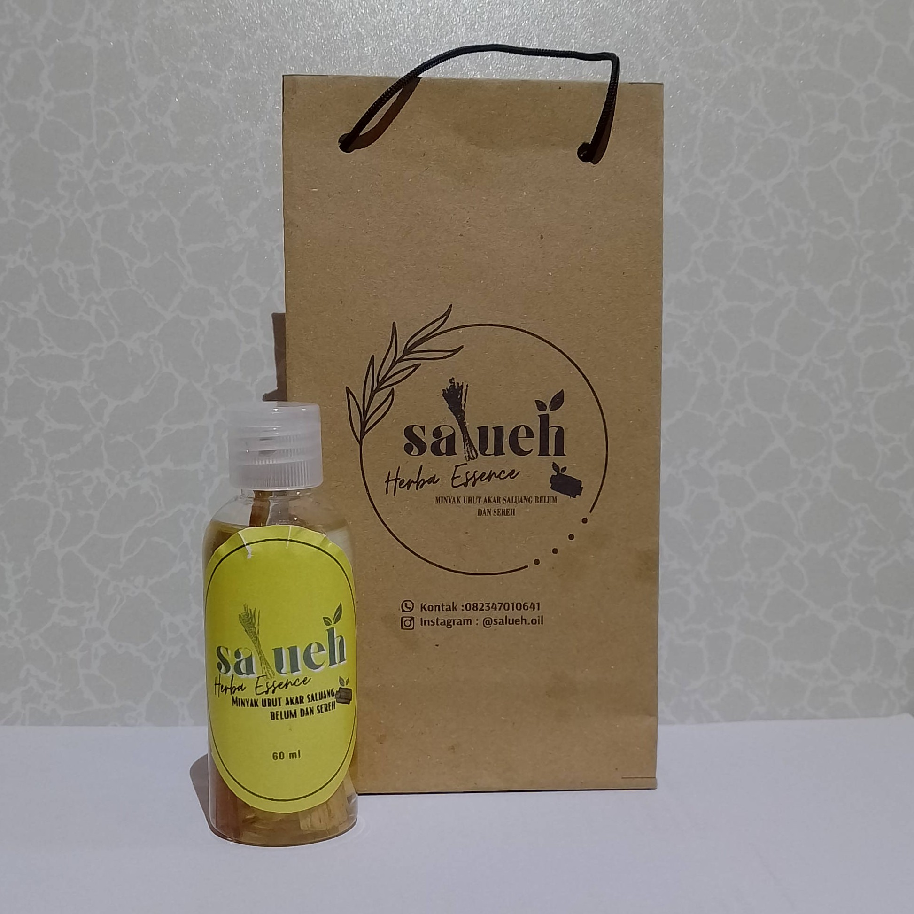
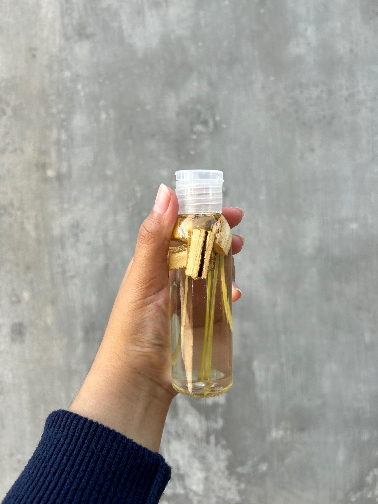
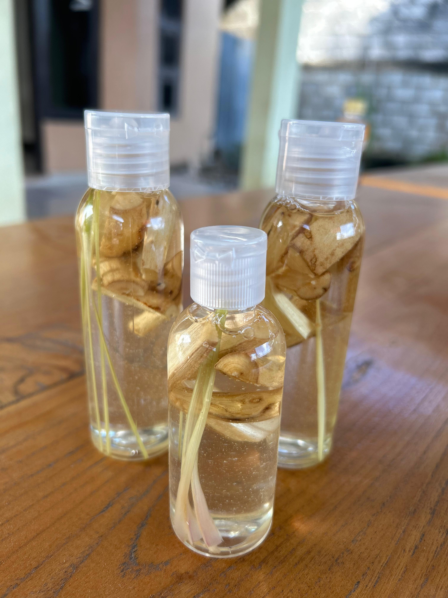

Akar Saluang Belum: obat tradisional untuk
berbagai penyakit, seperti sakit punggung, ginjal serta
sebagai penambah vitalitas.
Sereh: memiliki sifat antiseptik, meredakan
nyeri, anti-inflamasi, dan dapat meningkatkan sirkulasi darah.
Minyak Kelapa Murni (VCO): menjaga kesehatan
tubuh dan kulit karena mengandung antioksidan serta sifat
antimikroba alami.
Manfaat Produk "Salueh Oil"
Salueh Oil adalah minyak urut herbal berbahan dasar alami yang
diformulasikan untuk membantu meredakan nyeri sendi setelah
aktivitas, memberikan rasa rileks pada tubuh, sekaligus melindungi
kulit dari gigitan nyamuk. Selain itu, kandungan alaminya juga
bermanfaat untuk menjaga kesehatan kulit agar tetap lembap, halus,
dan terawat setiap hari.
Galeri Produk



Ukuran: 60 ML
Harga: Rp20.000
Ukuran: 100 ML
Harga: Rp25.000
Mengapa Minyak Salueh?
Produk alami, hasil karya mahasiswa, dan solusi sehat dari alam
Kalimantan.
🌿 Berasal dari Alam:
Minyak ini mengandung akar Saluang Belum dan
serai, dua bahan alami dari pulau Kalimantan
yang dipercaya mampu
meredakan nyeri dan memberikan efek relaksasi.
🎓 Inovasi Mahasiswa:
Dibuat dalam program
PMW (Program Mahasiswa Wirausaha), produk ini
menjadi bentuk nyata kontribusi mahasiswa dalam dunia usaha
berbasis kesehatan alami.
🤝 Kolaborasi:
Tim kami berasal dari berbagai keahlian, yaitu rumpun
kesehatan dan teknologi. Kami juga bermitra dengan petani
lokal untuk bahan baku.
Apa Kata Mereka?
"Baru pertama kali coba minyak urut dengan perpaduan akar saluang
dan sereh, unik banget"
- Citra -
"Produknya benar-benar bagus, apalagi buat yang hobi olahraga,
ampuh banget buat mengatasi pegal-pegal"
- Putra -
"Aroma minyak urutnya lembut dan menenangkan, bikin rileks tanpa
bau menyengat"
- Tania -
Frequently Asked Questions
Tentunya aman sekali. Minyak urut yang kami buat 100% dari bahan alami, sehingga sangat aman apabila ingin digunakan setiap hari.
Tidak, minyak urut ini cepat meresap, jadi tidak meninggalkan rasa lengket di badan.
Ya, aman sekali karena produk ini dari bahan alami. namun apabila memiliki kulit sangat sensitif bisa dioleskan sedikit dibagian kulit kecil
Minyak urut ini tidak memiliki variasi aroma, aroma yang dimiliki produk ini adalah campuran dari sereh dan minyak kelapa
Yah Sayang sekali, produk kami belum tersedia secara offline masih dipasarkan secara online